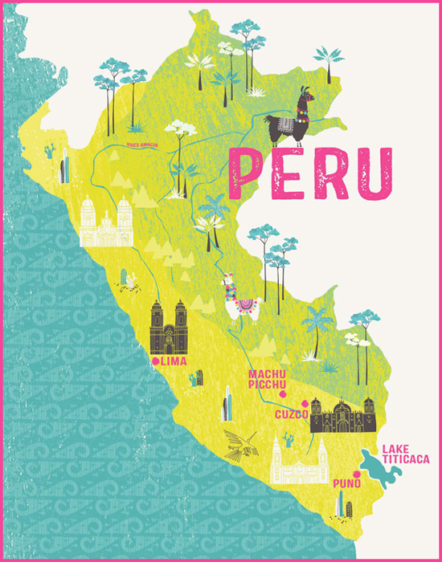

Peru - 2009

A fund-raising trip (for Dogs for the Disabled) to Machu Picchu in Peru. We flew, via Madrid, to Lima for an overnight stop and then another flight to Cuzco (at 3,400 m / 11,200 feet) for altitude acclimatisation ...

A fund-raising trip (for Dogs for the Disabled) to Machu Picchu in Peru. We flew, via Madrid, to Lima for an overnight stop and then another flight to Cuzco (at 3,400 m / 11,200 feet) for altitude acclimatisation ...